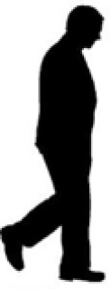

KAPININ ÖNÜNDE
Bir sokakta bir adam evinin önünde oturuyor, diğer bir adam da kaldırımda bir ileri, bir geri gidip geliyor. İkisi de 1 saat süreyle yoldan geçenleri sayıyorlar. Bu sürede hangisi daha fazla insan saymıştır?
Cevap:
İkisinin de saydığı insan sayısı eşittir. Adamlardan biri sabit duruyor, diğeri gelip gidiyor. Fakat ikisi de hem gelenleri hem de gidenleri sayıyor. Bir ileri bir geri gidip gelen adamın yanından geçen her kişi, kapıda duran tarafından ya görülmüştür ya da görülecektir.
